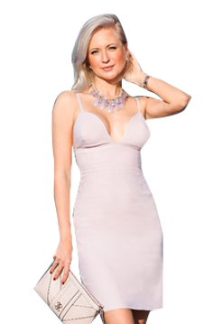

*Мы не обещаем, что вы похудеете, однако при соблюдении
всех рекомендаций вы гарантированно будете выглядеть стройнее
*Перед началом похудения требуется
консультация специалиста
Сейчас на сайте:
172
Ответьте на вопросы бесплатного теста и получите персональные рекомендации по похудению
Тест подготовлен ведущими диетологами Москвы в рамках
социологической программы похудения и здорового питания
Начать тестирование
1
По результатам теста вам предложат 1 из 342 персональных методик по похудению, которая
поможет вам сбросить вес легко и в короткие сроки.
96,7%
эффективность наших методик, подтвержденная десятками тысяч женщин.
9
ведущих врачей-диетологов Москвы разрабатывали данный тест.
Отзывы женщин, прошедших тест
Ольга Стрелкова
44 года, город Саратов
С детства не отличалась худобой - на всех фото выделялась не в
лучшем свете. Нашла тестирование случайно, получила методику и в
свои 44 года с легкостью избавилась от 26 кг! Планирую выбросить
старые фото и устроить грандиозную фотосессию в новом облике! *
* Ваш результат
может отличаться
Анастасия Валентей
29 лет, город Пенза
Сразу после института устроилась на сидячую работу и очень быстро
начала набирать вес. Было стыдно идти на встречу с однокурсниками -
очень уж сильно меня разнесло. Прошла ваш тест на похудение и смогла
похудеть на 16 кило! На вечере встречи была самой красивой))) *
* Ваш результат
может отличаться
Диана Глазкова
64 года, город Новороссийск
На пенсии уже нет такого желания следить за своей внешностью, да и
спортом особо не позанимаешься. После вашего теста получила
рекомендации, стала им следовать и похудела на 35 кг! Теперь
чувствую себя великолепно, хожу пешком, часто встречаюсь с подругами
- как будто заново родилась! * * Ваш результат может
отличаться

Анна Третьякова
37 лет, город Сызрань
После рождения второго ребенка набрала 30 кг и никак не могла взять
себя в руки. Годы шли, вес прибавлялся стабильно, пока не достиг
жуткой отметки 120 кг. Старшая дочь посоветовала пройти тест и
худеть по методике. Я так и сделала, чем невероятно довольна -
похудела до 52 кг и не набираю вес уже целый год! * * Ваш результат может
отличаться
Начните меняться прямо сейчас.
Ответьте на несколько простых вопросов и худейте!
Начать тестирование
*Мы не обещаем, что вы похудеете,
однако при соблюдении всех рекомендаций
вы гарантированно будете выглядеть стройнее *Перед началом похудения
требуется консультация специалиста
Сейчас на сайте:
235
Ответьте на 17 простых вопросов и получите максимально эффективную методику похудения
персонально для вас. Высокая эффективность данных рекомендаций была доказана в условиях
клинических исследований.